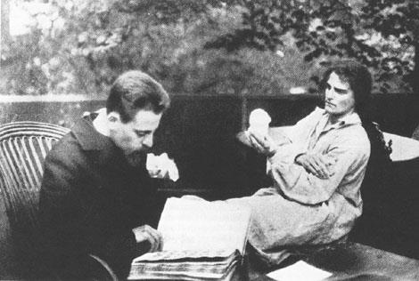

Rilke na starej fotografii
Friedelhausen 1905
W roku 1905 nawiązuje Rilke znajomość z hrabiną Luise von Schwerin, z domu Nordeck zur Rabenau, która zaprasza go do swej rodowej siedziby Friedelhausen w Hesji.
Tam poznaje poeta rodzinne grono hrabiny — jej córkę Gudrun i jej męża, barona Jacoba von Uexküll (dla ich córki o niezwykłym imieniu Damajanti napisze Rilke powiastkę), macochę hrabiny Julie von Nordeck oraz siostrę Alice Faehndrich, właścicielkę willi na Capri, w której będzie Rilke dwukrotnie gościł.
Na tarasie zamku Friedelhausen Clara modelowała popiersie swego pogrążonego w lekturze męża.
